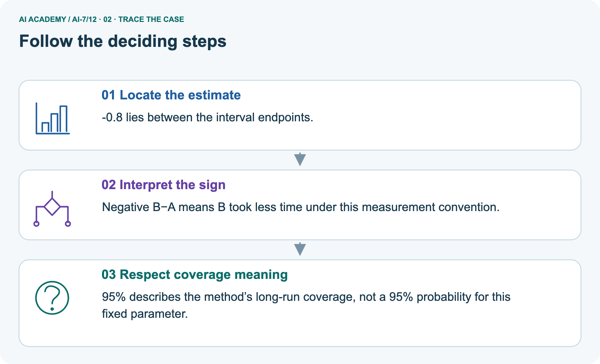
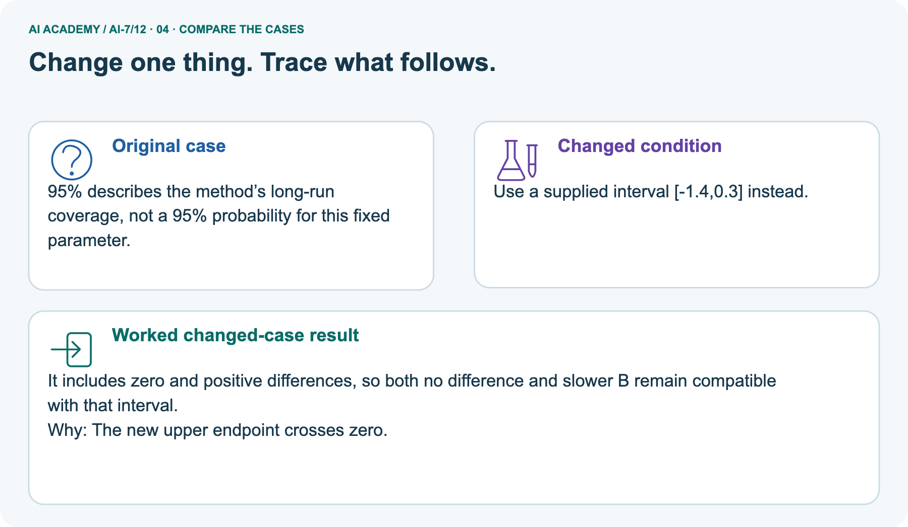
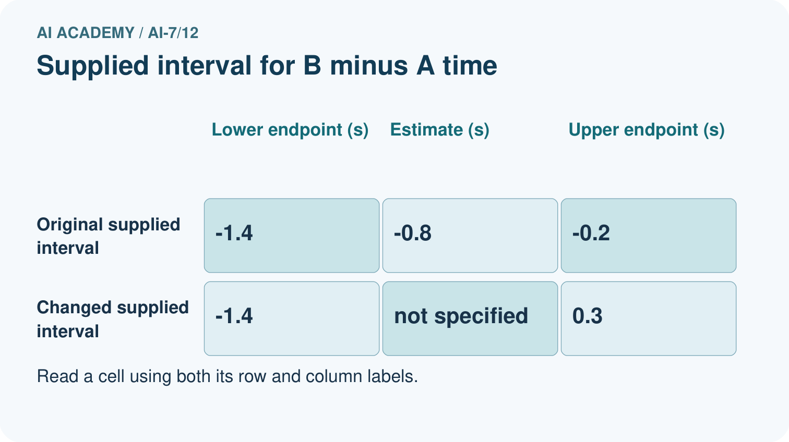
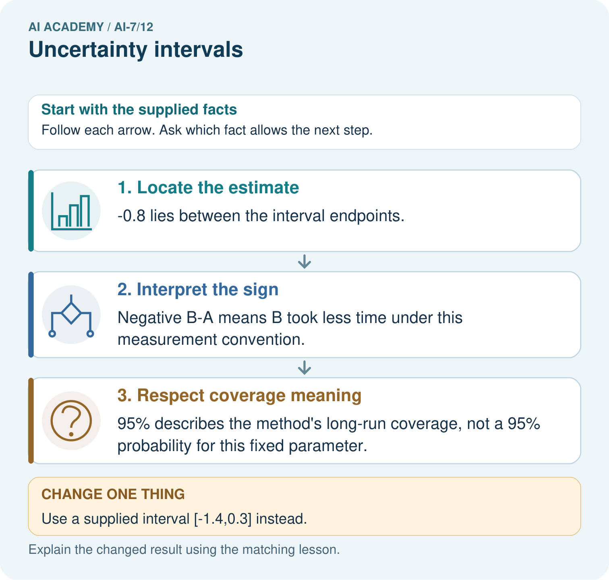
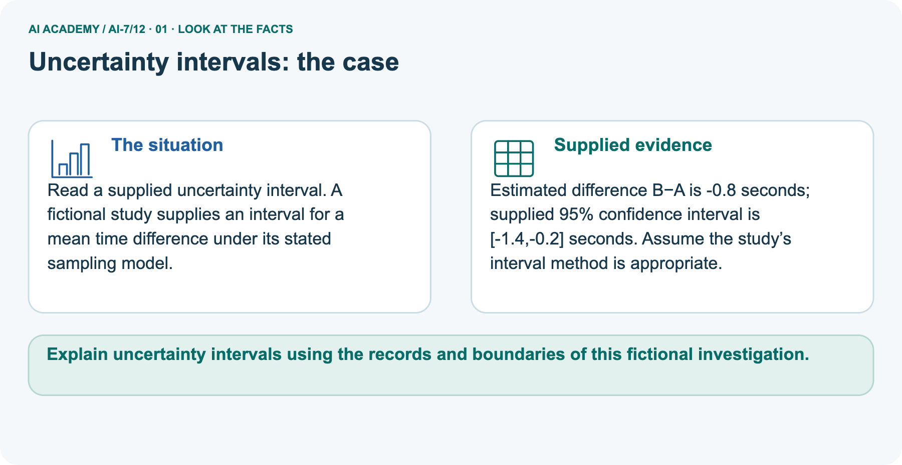
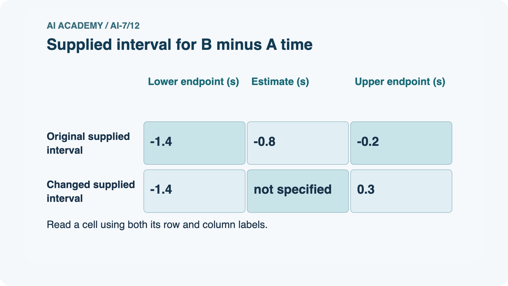
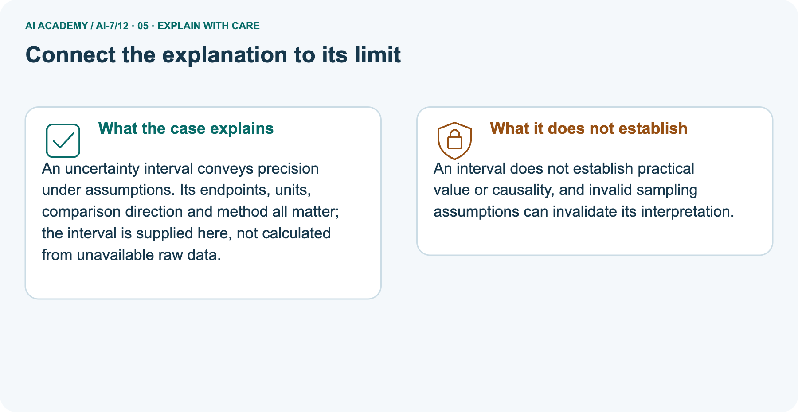
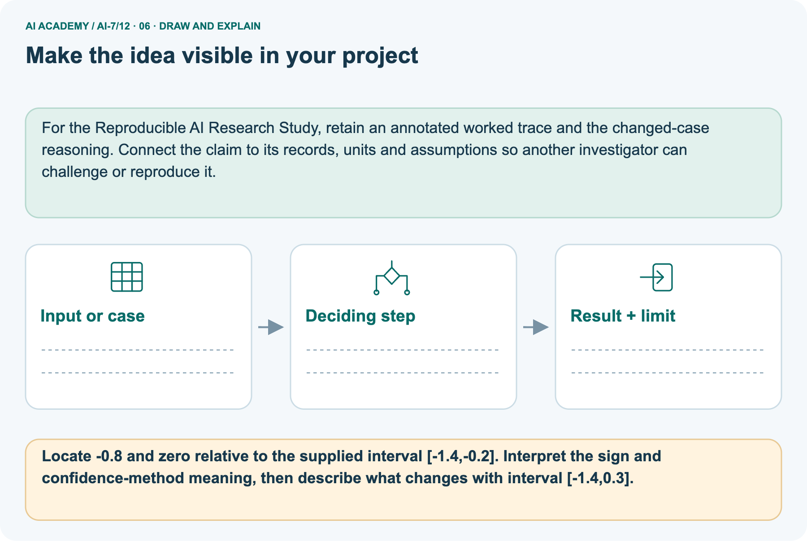

AI Academy · Level 7 · Grade 12 · Week 12 · Student lesson
Uncertainty intervals
Learn to understand, design, build, test and explain AI systems responsibly.
Project: Reproducible AI Research Study
THE CONNECTED WEEK
State the model. Calculate the bounds. Explain the coverage.
Compute a known-sigma normal mean interval and interpret separate supplied differences without inventing missing data or stronger claims.
Keep one habit: Interval contract → standard-error/margin ledger → supplied-difference native plot → target/model probes → complete numeric audit → independent new inputs.
Main lesson · Section 1
Calculate a mean interval under a stated sampling model
Separate arithmetic, confidence-method meaning and unverified assumptions.
Learning goals
I can explain the mechanism and terminology of uncertainty intervals.
I can apply the stated procedure to a new case with a traceable result.
I can identify an assumption or limitation and design a revealing follow-up.
Retrieve sampling variability, units and known-model probabilities
Close your notes first. A rough first answer helps us choose the right starting point; it is not a score for your ability.
Without opening the old lesson, explain one key idea from Sampling variability. Give an example and a mistake that the idea helps you avoid.
Without opening the old lesson, explain one key idea from Experimental units and independence. Give an example and a mistake that the idea helps you avoid.
Without opening the old lesson, explain one key idea from A literature comparison matrix. Give an example and a mistake that the idea helps you avoid.
After trying, check the relevant lesson or ask your teacher. Change the part of your explanation that the evidence shows was wrong.
Prerequisite and starting response
Recall Sampling variability. Explain why a recorded result needs its input conditions and evidence source before it can support a claim.
End goal
Explain uncertainty intervals using the records and boundaries of this fictional investigation.
Earlier wording, alternatives and picture transcripts
Your learning target
Remember before reading
This week you will practise:
Explain the mechanism and terminology of uncertainty intervals
Apply the stated procedure to a new case with a traceable result
Identify an assumption or limitation and design a revealing follow-up
Retrieve what you already know
This week’s end goal
Main lesson · Section 2
Define the target, formula and confidence meaning before calculating
The interval method depends on the sampling assumptions, not just the summary numbers.
Begin with a mean and its uncertainty
A sample mean is one estimate. An interval-producing method describes its uncertainty under specified assumptions. In this exercise, sixteen independent normal measurements have observed mean ten and known population standard deviation two. Compute a standard error, multiply by the supplied critical value and extend the interval around the mean.
The confidence level describes repeated use of the procedure under its model; it is not a new probability that this fixed unknown mean lies in the already observed interval.
Define confidence-method interpretation
An uncertainty interval needs a sampling model and assumptions. A confidence level refers to the repeated-sampling method, not a probability attached to a fixed unknown parameter after observing data.
Complete known-sigma normal-model contract
| Interval item | Complete constructed-exercise contract |
|---|---|
| Target | Population mean, not the range of individual observations |
| Sampling assumptions | Independent measurements from a normal population; known positive population standard deviation |
| Main supplied summaries | Observed mean 10 units; sigma 2 units; n=16 |
| Standard error of sample mean | SE = sigma / sqrt(n) |
| Supplied critical value | 1.96, rounded normal critical value for approximately 95% coverage |
| Margin and endpoints | Margin =1.96×SE; interval = mean ± margin |
| Confidence interpretation | Long-run interval-procedure coverage under assumptions; fixed-parameter probability not supplied |
| Known sigma versus estimated spread | Do not substitute sample SD into this exact known-sigma formula without a justified method |
| Model contrast | This independent-normal model differs from the previous finite-population without-replacement exercise |
| Limits | Numeric guards cannot verify independence, normality, known sigma or unbiased sampling; interval does not repair bias or establish practical value/causality |
Name supplied and missing evidence
Earlier wording, alternatives and picture transcripts
Begin by writing the question the procedure is intended to answer. Identify the information already supplied, the information it will produce and the information still missing.
These are constructed classroom examples; they do not require live accounts, private records or an external service. Do not treat a plausible explanation as a measured outcome.
Main lesson · Section 3
Trace standard error, margin and both endpoints
Keep population spread sigma distinct from the standard error of the mean.
Original independent-normal known-sigma procedure
For this constructed exercise assume independent normal measurements with known population standard deviation 2. A 95% mean interval uses supplied normal critical value 1.96: mean plus/minus 1.96*sigma/sqrt(n). Unknown sigma requires a different justified method.
Complete arithmetic and unit ledger
| Main calculation step | Substitution | Result and unit |
|---|---|---|
| Root sample size | sqrt(16) | 4, dimensionless |
| Standard error | sigma / sqrt(n) =2/4 | 0.5 measurement units |
| Margin | 1.96 ×0.5 | 0.98 measurement units |
| Lower endpoint | 10 −0.98 | 9.02 measurement units |
| Upper endpoint | 10 +0.98 | 10.98 measurement units |
| Reported interval | [9.02, 10.98] | For the population mean under stated assumptions |
| What is not calculated | Raw individual-value coverage or unknown-sigma interval | No actual sampling or coverage experiment |
State which assumptions the numbers cannot verify
Before applying the procedure, write its units, denominator or decision boundary where relevant. A partner should be able to repeat each step using the same inputs.
If a required input is absent or violates the stated contract, record that condition explicitly instead of quietly replacing it with a convenient value.
Explain the visual
Point to the input, the deciding step and the result in this week’s visual. Explain the same step in ordinary words. A picture helps when you can say what each part represents.
Earlier wording, alternatives and picture transcripts
Uncertainty intervals — evidence trace
Connect the picture and the explanation
Main lesson · Section 4
Predict a supplied difference interval that includes zero
Zero inclusion does not prove exact equality or erase the estimate.
Current task and response
Assume 16 independent normal measurements with observed mean 10 and known population standard deviation 2. Use a 95% interval: mean ± 1.96 × sigma / sqrt(n). Compute the standard error, margin and interval. Show the intermediate steps and give the conclusion with its scope.
Predict changed supplied bounds
Change: Use a supplied interval [-1.4,0.3] instead.
Check after predicting
Prediction: It includes zero and positive differences, so both no difference and slower B remain compatible with that interval.
Reason: The new upper endpoint crosses zero.
Earlier wording, alternatives and picture transcripts
Compare a familiar case with a changed case
Change one thing in the pictured case
Main lesson · Section 6
Read estimate, comparison direction and zero against the supplied bounds
Keep interpretation of a supplied interval separate from calculation with known sigma.
Main computed interval and checked result
Assume 16 independent normal measurements with observed mean 10 and known population standard deviation 2. Use a 95% interval: mean ± 1.96 × sigma / sqrt(n). Compute the standard error, margin and interval.
SE = 2/4 = 0.5; margin = 0.98; interval [9.02, 10.98]. Under assumptions, the method covers the fixed population mean in approximately 95% of repeated samples.
Compare the intermediate evidence with the final statement. Explain why each number or decision follows from the stated inputs.
The conclusion belongs to this scenario and procedure; changing the inputs, evaluation population or authority can change what it establishes. Retain the raw record so a later revision can be compared honestly.
Separate time-difference inputs and method assumption
Read a supplied uncertainty interval. A fictional study supplies an interval for a mean time difference under its stated sampling model.
Estimated difference B−A is -0.8 seconds; supplied 95% confidence interval is [-1.4,-0.2] seconds. Assume the study’s interval method is appropriate.
The picture is a separate time-difference report. Its estimate B−A is −0.8 seconds and its supplied 95% interval is [−1.4, −0.2], assuming the study’s method is appropriate. All endpoints are negative, so the interval supports a negative mean-time difference under that method, not a claim that every request is faster.
The changed supplied interval [−1.4, 0.3] includes zero and both negative/positive differences; it does not establish a definite direction or prove equality. Raw data, sample size and fitting method are absent. Do not derive its standard error, force symmetric bounds or apply the main known-sigma formula to it. Practical value and causality need additional evidence.
See original and changed bounds in the native plot




Read the picture one step at a time
An uncertainty interval conveys precision under assumptions. Its endpoints, units, comparison direction and method all matter; the interval is supplied here, not calculated from unavailable raw data.
Compare supplied intervals without reconstructing raw data
| Separate supplied report | Original interval | Changed interval |
|---|---|---|
| Point estimate B−A | −0.8 seconds | −0.8 seconds, retained in the scenario |
| Bounds | [−1.4, −0.2] seconds | [−1.4, 0.3] seconds |
| Zero relative to bounds | Outside, to the right | Inside |
| Mean-difference direction | Entire supplied range negative | Both signs and zero included |
| Valid caution | Not every request’s time or a causal effect | Zero inclusion is not proof of equality |
| Unavailable ingredients | Raw data and interval fitting details | Still unavailable; no recalculation claimed |
Predict the changed zero-including interval
Change one thing: Use a supplied interval [-1.4,0.3] instead. Predict the result before checking the explanation. What remains the same?
Check after predicting



Explain invalid assumptions, practical value and confidence meaning
An interval does not establish practical value or causality, and invalid sampling assumptions can invalidate its interpretation.
Read the labelled picture: Locate -0.8 and zero relative to the supplied interval [-1.4,-0.2]. Interpret the sign and confidence-method meaning, then describe what changes with interval [-1.4,0.3].
Earlier wording, alternatives and picture transcripts
Optional local lab: predict the printed result before running this standalone Python 3 example. Change one relevant boundary input, record the outcome and state the contract or statistical assumptions.
The program uses fictional values and the Python standard library; it performs no external operations.
from math import sqrt
def known_sigma_interval(mean, sigma, n, critical=1.96):
"""Assume independent normal sampling and a known population sigma."""
if type(n) is not int or n < 1 or sigma < 0 or (critical <= 0):
raise ValueError('interval settings')
se = sigma / sqrt(n)
margin = critical * se
return (se, mean - margin, mean + margin)
print(known_sigma_interval(10, 2, 16))Learn from the worked case
Cover the result before checking it. Say what is given, choose the procedure, and follow one step at a time. Then uncover the result and explain your first mismatch. Ask why a step is allowed, not only what number it produces.
A pictorial worked case: Uncertainty intervals
The facts we will use






Why this result follows
What this example does not establish
Main lesson · Section 7
Audit confidence meaning, target and missing assumptions
An interval is a model-dependent analysis result rather than an all-purpose guarantee.
Core interval qualification and failure analysis
A narrow interval can be precisely biased; sampling independence and representativeness must be justified.
A useful check asks what would make the reasoning fail. Distinguish a failure to execute the declared procedure from a weakness in the procedure itself.
The first may require a correction; the second requires an explicitly revised method and new evidence. Preserve unsuccessful cases so an improved result cannot hide the original problem.
Complete target, sign and model probes
| Interval probe | Expected interpretation |
|---|---|
| Known sigma 2 and n16 | SE 0.5; does not mean raw observations have SD 0.5 |
| A 95% confidence method | Approximate long-run coverage under assumptions, not 95% of individual observations |
| Fixed observed interval | No 95% posterior parameter probability supplied by this frequentist calculation |
| Unknown sigma | Choose an appropriate justified method; do not silently pretend known |
| Biased sampling or correlated records | Numeric interval may not have intended coverage |
| Zero inside a difference interval | No definite sign conclusion from these bounds; not proof of equality |
| Negative B−A mean interval | B lower mean time under stated convention, not every paired request faster |
| Supplied asymmetric interval | Keep supplied endpoints; no assumed symmetric-SE reconstruction |
| Finite positive inputs pass code guards | Arithmetic admissible; real model/design assumptions still unverified |
Guided repair and explanation
A report omits this qualification: A narrow interval can be precisely biased; sampling independence and representativeness must be justified.
Explain how omitting it could change a reader's interpretation, and write an accurate replacement.
Earlier wording, alternatives and picture transcripts
Locate the earliest unsupported step
Main lesson · Section 8
Practise tracing units and interpreting interval signs
State whether the interval was calculated here or only supplied.
Current explanation and guided check
Explain the weekly mechanism in your own words. Use the worked scenario to name its input, decision rule and output.
Supported W2 trace
Use workbook W2 for the connected example “Uncertainty intervals”. First fill the input and rule boxes. Try the middle steps before asking for a hint. After a hint, try the next step yourself.
| Plan | Do | Check |
|---|---|---|
| What is given? Which rule or procedure applies? | Record each intermediate step. | Does the result follow? What remains unknown? |
Explain your trace to a partner. Your partner points to one step to check. Swap roles on the next case. Each person writes their own explanation.
Individual scope check
Use the worked case for Uncertainty intervals. Proposed explanation: “The worked result establishes every future case”. Decide whether this explanation is supported.
Point to the step or supplied fact that decides; explain your repair if needed.
Answer on your own before discussion. If you are unsure, say which step you need help with.
Picture response
Locate -0.8 and zero relative to the supplied interval [-1.4,-0.2]. Interpret the sign and confidence-method meaning, then describe what changes with interval [-1.4,0.3].
Reserve the selected new mean/sigma/sample-size calculation
This is supported practice. Keep the separately named independent case for an attempt before feedback.
Earlier wording, alternatives and picture transcripts
Practise with less help: Trace the worked case
Check your reasoning
Explain the picture
Main lesson · Section 9
Run the complete interval calculation and supplied-bound check
Record arithmetic separately from untested sampling assumptions.
Current known-sigma mean-interval investigation
Assume 16 independent normal measurements with observed mean 10 and known population standard deviation 2. Use a 95% interval: mean ± 1.96 × sigma / sqrt(n). Compute the standard error, margin and interval. Show the intermediate steps and give the conclusion with its scope.
Runnable complete numeric and supplied-bound audit
"""Known-sigma normal interval arithmetic and separate supplied-interval interpretation."""
from math import sqrt,isfinite
from statistics import NormalDist
def finite_real(value):
if type(value) not in (int,float):return False
try:return isfinite(value)
except OverflowError:return False
def known_sigma_interval(mean,sigma,n,critical=1.96):
"""Assume independent normal sampling with known positive population sigma.
Numeric checks cannot verify those design/model assumptions.
"""
if not finite_real(mean) or not finite_real(sigma) or sigma<=0:
raise ValueError('finite mean and known positive sigma required')
if type(n) is not int or n<1 or not finite_real(critical) or critical<=0:
raise ValueError('positive exact n and finite positive critical required')
try:
se=sigma/sqrt(n);margin=critical*se;lower=mean-margin;upper=mean+margin
except OverflowError:raise ValueError('settings exceed this floating-point calculation')
if not all(isfinite(v) for v in [se,margin,lower,upper]):raise ValueError('nonfinite result')
return {'standard_error':se,'margin':margin,'lower':lower,'upper':upper,'critical':critical,
'theoretical_normal_coverage':2*NormalDist().cdf(critical)-1}
main=known_sigma_interval(10,2,16)
assert main['standard_error']==0.5 and abs(main['margin']-0.98)<1e-12
assert abs(main['lower']-9.02)<1e-12 and abs(main['upper']-10.98)<1e-12
assert abs(main['theoretical_normal_coverage']-0.95)<0.00001
# Separate supplied intervals; no standard error or raw-data fitting is inferred.
def locate_zero(lower,upper,estimate):
if not all(finite_real(v) for v in [lower,upper,estimate]) or lower>upper or not lower<=estimate<=upper:
raise ValueError('ordered finite supplied bounds containing the estimate required')
return {'contains_zero':lower<=0<=upper,
'direction':'all negative' if upper<0 else 'all positive' if lower>0 else 'includes zero'}
picture=locate_zero(-1.4,-0.2,-0.8)
changed=locate_zero(-1.4,0.3,-0.8)
assert picture=={'contains_zero':False,'direction':'all negative'} and changed['contains_zero']
print('Main known-sigma interval:',main)
print('Separate supplied B-A time interval:',picture,'changed supplied interval:',changed)
print('Negative B-A means B has lower mean time under this convention, not every request is faster.')
print('Critical 1.96 is rounded: theoretical normal-model coverage is approximately 95 percent. No repeated-sample coverage experiment was run.')
print('Confidence concerns the procedure under assumptions, not a 95 percent probability assigned to a fixed unknown mean after observing this interval. Zero inclusion does not prove equality.')
print('The calculation does not verify normality, independence, known sigma or unbiased sampling; an interval does not repair bias, prove causality or establish practical value.')
Expected calculations and model limits
Predict standard error 0.5, margin 0.98 and interval [9.02, 10.98] before running or tracing. The code rejects nonfinite values, Boolean counts and nonpositive sigma for this nondegenerate normal exercise. Its theoretical normal coverage calculation explains why rounded 1.96 gives approximately 95%, not an observed coverage trial.
The separate supplied difference intervals are located against zero without inferring their raw data or standard error. No normality, independence, known-sigma status or unbiased collection is verified by arithmetic. The reserved mean 20/sigma 5/n25 case remains for the first individual attempt.
Evidence ledger and reflection
| Record | Your evidence |
|---|---|
| Given input and fixed rule | |
| Prediction before checking | |
| Actual result, or “not run” | |
| First mismatch and one explanation | |
| Boundary or missing input and expected response |
On paper, trace the supplied procedure. If code is provided, predict before running it in a local practice file. Never write an expected answer as though it were an observed run.
Before trying: what do I expect, and why? While trying: which step could first go wrong? Afterwards: what did I actually observe, and what should change? Keep “not run” if you only traced the procedure.
Earlier compact illustration and limited guards
from math import sqrt
def known_sigma_interval(mean, sigma, n, critical=1.96):
"""Assume independent normal sampling and a known population sigma."""
if type(n) is not int or n < 1 or sigma < 0 or (critical <= 0):
raise ValueError('interval settings')
se = sigma / sqrt(n)
margin = critical * se
return (se, mean - margin, mean + margin)
print(known_sigma_interval(10, 2, 16))The earlier compact reference code illustrates the default arithmetic but omits some finite-value and nondegenerate-input guards. Use the complete public investigation for this lesson’s explicit positive-sigma contract. Neither version can verify the actual sampling assumptions from summary numbers.
Earlier wording, alternatives and picture transcripts
Predict, investigate and preserve the evidence
Plan → try → check
Main lesson · Section 14
Try alone: calculate a new known-sigma mean interval
Show standard error, margin, endpoints and one required assumption.
Complete selected independent task
Observed mean is 20 from 25 independent normal measurements; population standard deviation is known to be 5. Use the supplied 95% rule mean ± 1.96 × sigma / sqrt(n). Compute the interval and name one assumption.
First attempt and support record
Attempt this case before feedback. Record any help. Earlier examples below are further practice; a case already practised with feedback cannot establish fresh transfer.
Feedback after trying
Attempt the independent case before hints. Record whether you worked alone, used a hint or followed a model. After feedback, fix the first unsupported step and explain why it changed.
A later check uses a changed case, not a copied answer.
Earlier wording, alternatives and picture transcripts
Independent case: Apply a new case independently
Attempt this without hints
Observed mean is 20 from 25 independent normal measurements; population standard deviation is known to be 5. Use the supplied 95% rule mean ± 1.96 × sigma / sqrt(n). Compute the interval and name one assumption.
Record support used: none, hint or teacher explanation. After feedback, a different case is needed to demonstrate independence.
Use feedback to improve
Main lesson · Section 11
Save interval target, model, inputs, units and confidence meaning
Keep supplied endpoints separate from independently calculated ones.
Project task and artifact
Add a labelled uncertainty intervals evidence sheet to Reproducible AI Research Study. Show how you can explain the mechanism and terminology of uncertainty intervals.
Use the supplied fictional case and keep its inputs, intermediate steps, calculation or prediction, and limitation. Connect this record to last week’s record; a matching answer without a trace is insufficient.
| Project evidence | Record |
|---|---|
| Component and version | |
| Inputs permitted at prediction time | |
| Trace and comparison with earlier work | |
| Failure, limit and human review |
Actual local calculation or paper trace and limitations
For the Reproducible AI Research Study, retain an annotated worked trace and the changed-case reasoning. Connect the claim to its records, units and assumptions so another investigator can challenge or reproduce it.
Earlier wording, alternatives and picture transcripts
Evidence for your project
Main lesson · Section 16
Explain what the interval procedure covers and what it does not establish
Do not turn zero inclusion, model assumptions or a confidence level into stronger claims.
Retrieve and explain
Close your notes. Explain this goal in your own words: Explain the mechanism and terminology of uncertainty intervals
Plan a changed-case return
If you are unsure, return to the worked picture and explain one arrow. If you are ready, change an input or assumption and justify your prediction.
Save your workbook evidence. At the next review, try a different case before opening your old answer.
Reference bank and extra practice
Choose the reference that helps your next step.
Reference · Use research vocabulary precisely
Reference · Section 5
Reference · Use research vocabulary precisely
Connect each term to the question, comparison, measurement or evidence.
Vocabulary and your explanation
| Word | Meaning |
|---|---|
| Standard error | The model-based variation of an estimate |
| Confidence interval | An interval procedure with declared repeated-sampling coverage |
| Known sigma | A supplied population standard deviation assumption |
Extra challenge · Explain a stronger case
Reference · Section 10
Extra challenge · Explain a stronger case
Choose the next challenge after the main route.
Explain,repair and extend
Explain the weekly mechanism in your own words. Use the worked scenario to name its input, decision rule and output.
A report omits this qualification: A narrow interval can be precisely biased; sampling independence and representativeness must be justified.
Explain how omitting it could change a reader's interpretation, and write an accurate replacement.
For the worked scenario, propose one additional case that could reveal a failure, describe its expected outcome before running it, and explain what would need to remain fixed for a fair comparison.
Do not reuse W4 as a new final test after receiving feedback.
Explain → apply → challenge
Reference · Check the research reasoning and its limits
Reference · Section 12
Reference · Check the research reasoning and its limits
Use after practice; reserve the selected independent case for its first attempt.
Current explanation and response
Complete the supported workbook tasks before attempting W4 independently. Record any hints or help used. After feedback, use the teacher's fresh retry rather than copying the earlier answer.
For a project, select a relevant new case, predict the outcome from the declared rule and preserve the result alongside any revision.
For the worked scenario, propose one additional case that could reveal a failure, describe its expected outcome before running it, and explain what would need to remain fixed for a fair comparison.
Do not reuse W4 as a new final test after receiving feedback.
Extra practice · Revisit the complete trace
Reference · Section 13
Extra practice · Revisit the complete trace
Predict before reading the supplied steps.
Complete trace and evidence
Complete evidence record
Uncertainty intervals — evidence trace
Follow the input through the stated procedure to its result. Cover the result first, predict it, then explain every intermediate step. The text/table accompanies the figure so the example can be read without colour.
Reference · The earlier route checklist
Reference · Section 15
Reference · The earlier route checklist
Use one main route rather than repeating the lesson.
Targets,route and first prediction
Start with this question: Read a supplied uncertainty interval. A fictional study supplies an interval for a mean time difference under its stated sampling model.
| By the end, I can | How I will show it |
|---|---|
| Explain the mechanism and terminology of uncertainty intervals | Explain the deciding step, show a trace or test, and state one limit. |
| Apply the stated procedure to a new case with a traceable result | Explain the deciding step, show a trace or test, and state one limit. |
| Identify an assumption or limitation and design a revealing follow-up | Explain the deciding step, show a trace or test, and state one limit. |
Remember → watch and explain → try with help → investigate → try independently → keep project evidence. Your teacher may spread this lesson across several classes.
Keep your first prediction. Compare it with what the evidence shows and explain any change.
Extra practice · Predict,check and repair
Reference · Section 17
Extra practice · Predict,check and repair
Keep supported feedback separate from the independent case.
First supported question and optional hint
Read a supplied uncertainty interval. A fictional study supplies an interval for a mean time difference under its stated sampling model.
Which labelled step matches this detail? 95% describes the method’s long-run coverage, not a 95% probability for this fixed parameter.
1. Interpret the sign
2. Locate the estimate
3. Respect coverage meaning
Hint if needed: Read the steps in the pictorial case. Match the supplied detail to the stage that performs or records it.
Practice 1: explain the deciding evidence
Check after the first attempt
After your attempt, compare with the supported explanation: Respect coverage meaning 95% describes the method’s long-run coverage, not a 95% probability for this fixed parameter.
An uncertainty interval conveys precision under assumptions. Its endpoints, units, comparison direction and method all matter; the interval is supplied here, not calculated from unavailable raw data.
Changed-case question and optional hint
Changed-case practice: Use a supplied interval [-1.4,0.3] instead. Which conclusion is supported by the supplied facts?
1. This one example guarantees correct results for every future input.
2. We can decide the result without examining the changed input or the procedure.
3. It includes zero and positive differences, so both no difference and slower B remain compatible with that interval.
Hint if needed: Use the changed condition and the deciding step in the pictorial trace. The answer must say what follows from those facts.
Practice 2: explain the deciding evidence
Check after the changed attempt
After your attempt, compare with the supported explanation: It includes zero and positive differences, so both no difference and slower B remain compatible with that interval. The new upper endpoint crosses zero.
Repair and retain the record
Review Sampling variability (ai-7/11). Goal: Explain the mechanism and terminology of sampling variability. Short practice: Calculate the two four-case rates and their difference.
Explain how changed included cases can affect a fixed model, and why identical deterministic records should not differ on a rerun.. Return to this week and explain what you changed.
Review Experimental units and independence (ai-7/9). Goal: Explain the mechanism and terminology of experimental units and independence. Short practice: Count independent plants and photo views.
Construct the stated group-correct split, then explain why placing a P1 view in evaluation creates leakage for the new-plant goal.. Return to this week and explain what you changed.
Review A literature comparison matrix (ai-7/6). Goal: Explain the mechanism and terminology of a literature comparison matrix.
Short practice: Explain why 8/10 indoors and 16/20 outdoors share a rate but not a controlled comparison. Which condition column must the literature matrix preserve?. Return to this week and explain what you changed.
The browser lab lets you edit the supported Python examples already included in this lesson. Predict first, run, inspect the actual output or error, change one input, then run again.
Keep code, predictions, actual results and a reasoned revision together. On paper, label your result as a trace rather than an execution.
Use Download completed work in the hosted lesson to export your answers, reflections, practice feedback and code-run evidence. Open the HTML copy to read or print it.
Drafts stay in this browser when storage is available; clear drafts on a shared device.
Earlier wording, alternatives and picture transcripts
Use this supported practice once, in the browser or on paper. Keep the reserved independent assessment for a separate first attempt before teacher feedback.
Repair a missing building block
Predict, run and debug
Keep your completed work
Reference · Six-picture concept journey
Reference · Section 18
Reference · Six-picture concept journey
Choose the picture that supports the current explanation.
01. Uncertainty intervals: the case



Read a supplied uncertainty interval. A fictional study supplies an interval for a mean time difference under its stated sampling model.
Supplied facts: Estimated difference B−A is -0.8 seconds; supplied 95% confidence interval is [-1.4,-0.2] seconds. Assume the study’s interval method is appropriate.
Point to the given fact that matters most. Explain why it matters.
02. Follow the deciding steps
Locate the estimate: -0.8 lies between the interval endpoints. → Interpret the sign: Negative B−A means B took less time under this measurement convention. → Respect coverage meaning: 95% describes the method’s long-run coverage, not a 95% probability for this fixed parameter.
Point to each numbered stage and explain which recorded input it uses.
03. Supplied interval for B minus A time



Supplied interval for B minus A time. Original supplied interval: Lower endpoint (s) = -1.4, Estimate (s) = -0.8, Upper endpoint (s) = -0.2.
Changed supplied interval: Lower endpoint (s) = -1.4, Estimate (s) = not specified, Upper endpoint (s) = 0.3.
Read the labels and values. Explain the relationship the model shows.
04. Change one thing. Trace what follows.
Original case: 95% describes the method’s long-run coverage, not a 95% probability for this fixed parameter. Changed condition: Use a supplied interval [-1.4,0.3] instead.
Expected result: It includes zero and positive differences, so both no difference and slower B remain compatible with that interval. Reason: The new upper endpoint crosses zero.
Predict before checking the worked changed-case result. Name what changed and what the supplied facts allow you to conclude.
05. Connect the explanation to its limit



An uncertainty interval conveys precision under assumptions. Its endpoints, units, comparison direction and method all matter; the interval is supplied here, not calculated from unavailable raw data.
Limit: An interval does not establish practical value or causality, and invalid sampling assumptions can invalidate its interpretation.
Explain the case, then point to a limit on the claim.
06. Make the idea visible in your project



For the Reproducible AI Research Study, retain an annotated worked trace and the changed-case reasoning. Connect the claim to its records, units and assumptions so another investigator can challenge or reproduce it.
Draw your input, deciding step, result and limit. Supported question: Locate -0.8 and zero relative to the supplied interval [-1.4,-0.2].
Interpret the sign and confidence-method meaning, then describe what changes with interval [-1.4,0.3].
Draw your project trace and justify the deciding step using evidence.